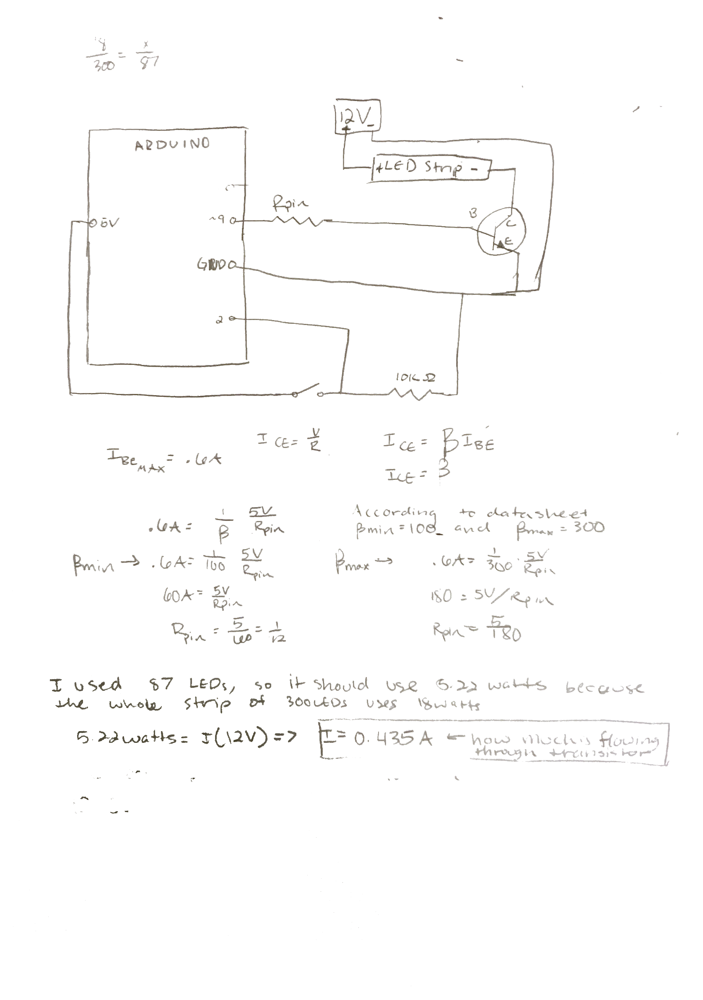
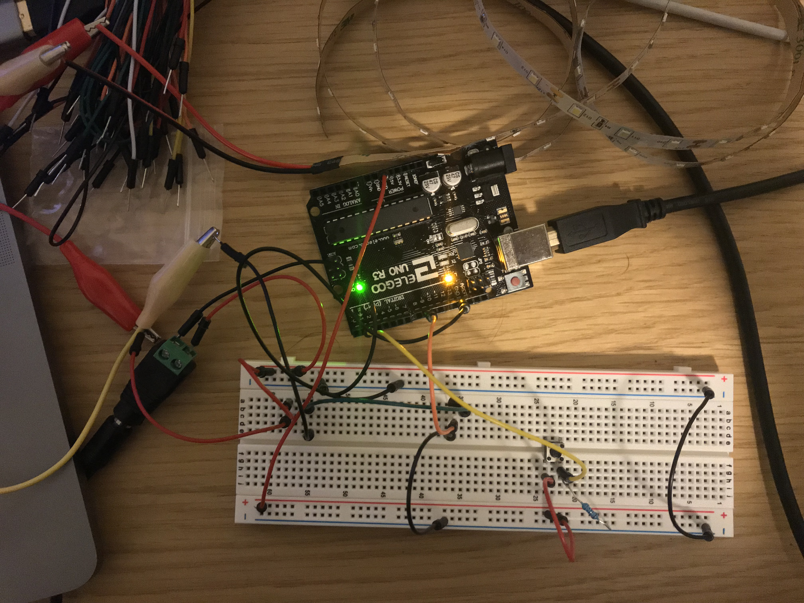

Ben's Assignment 4: Transistors
Schematic with Calculations

Here is the schematic and calculations. I calculated that the current going through the transistor is about .435A. I'm honestly very confused about all the calculations and transistors in general, but I hope this is right.
Circuit

Here is a picture of my circuit. I am only using 2 pins, the 2 pin for the button sensor, and the 9 pin to change the brightness of the LED strip.
Code Snippet
int button = 2; //pin for button
int LEDControl = 9; // transistor control for LED strip
int brightness = 0; // initial brightness level
// the setup routine runs once when you press reset:
void setup() {
pinMode(button, INPUT); //button is input
pinMode(LEDControl, OUTPUT); // LED is output
}
// the loop routine runs over and over again forever:
void loop() {
// read the state of the button and check if it is pressed
if (digitalRead(button) == HIGH && brightness < 255){ //if button is press and is under maximum brightness then do the following
analogWrite(LEDControl, brightness); // sets the LED Strip brightness
brightness += 5; // increases brightness level
delay(50); // 50 ms delay
} else if (brightness > 0) { //if button is not pressed and brighness is not zero (to preven from wrapping around)
analogWrite(LEDControl, brightness - 5); // sets brightness (subtract 5 so it turns all the way off)
brightness -= 5; // decrease brightness level
delay(50); // 50 ms delay
}
delay(1); // delay in between reads for stability
}
Here it is in Action!

While the button is pressed, the LED strip gets brighter. When you let go, the LED strip starts to dim.